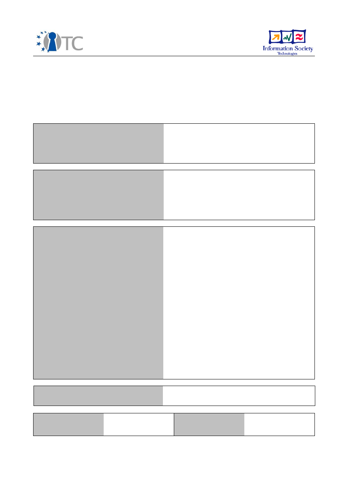

D4.6 Initial prototype Xen-based TC system
Project number
IST-027635
Project acronym
Open_TC
Project title
Open Trusted Computing
Deliverable type
Report (see p 84/85 Annex 1 - Nature)
Deliverable reference number
IST-027635/D4.6/FINAL|1.0
Deliverable title
Initial prototype Xen-based TC system
WP contributing to the deliverable
WP4
Due date
Feb 2007 - M16
Actual submission date
April 2007
Responsible Organisation
CUCL
Authors
CUCL (Derek Murray)
POLITO (Gianluca Ramunno)
Abstract
In this report, an initial prototype Xen-based
trusted computing system is described. This
is a modified version of the Xen VMM and
tool-stack, which takes into account some of
the requirements of the Basic Management
Interface (BMI). Specifically, our
modifications to Xen have involved
disaggregating the function of domain
building from the management domain into a
smaller domain isolated from the
management domain. This modified version
of Xen may be built using the Proof of
Concept LiveCD, and the included
development domain, though these do not
form part of this deliverable.
Keywords
WP4, Xen, Prototype, BMI, domB,
disaggregation
Dissemination level
Public
Revision
FINAL|1.0
Instrument
IP
Start date of the
project
1
st
November 2005
Thematic Priority
IST
Duration
42 months

Initial prototype Xen-based TC system
FINAL|1.0
If you need further information, please visit our website
www.opentc.net
or contact
the coordinator:
Technikon Forschungs-und Planungsgesellschaft mbH
Richard-Wagner-Strasse 7, 9500 Villach, AUSTRIA
Tel.+43 4242 23355 –0
Fax. +43 4242 23355 –77
Email
coordination@opentc.net
The information in this document is provided “as is”, and no guarantee
or warranty is given that the information is fit for any particular purpose.
The user thereof uses the information at its sole risk and liability.
Open_TC Deliverable 4.6
2/12

Initial prototype Xen-based TC system
FINAL|1.0
Table of Contents
1 Introduction .............................................................................................................. 4
1.1 Summary of work done.......................................................................................... 4
2 Features for Trusted Computing in Xen..................................................................... 5
2.1 Existing features.................................................................................................... 5
2.1.1 Hypervisor isolation........................................................................................... 5
2.1.2 Mandatory Access Control (MAC)....................................................................... 6
2.1.3 Virtual Trusted Platform Module (vTPM)............................................................ 6
2.2 Security-related features under development........................................................ 7
2.2.1 Dom0 disaggregation........................................................................................ 7
2.2.2 Xen Security Modules........................................................................................ 7
2.2.3 IOMMU support.................................................................................................. 7
3 Interaction with the Proof of Concept.........................................................................9
3.1 Description of the PET Proof of Concept prototype.................................................9
3.2 Description of the development domain................................................................ 9
3.3 Building the prototype using the development domain......................................... 9
4 Conclusion............................................................................................................... 11
5 List of Abbreviations ............................................................................................... 12
Open_TC Deliverable 4.6
3/12

Initial prototype Xen-based TC system
FINAL|1.0
1
Introduction
The OpenTC project is building an open trusted computing architecture that is based
on the virtualisation of computers. By harnessing virtualisation, it is possible to isolate
trusted and untrusted code in separate virtual machines (VMs), and be assured that
the trusted code is not affected by untrusted code running in any other VM.
Xen is a Virtual Machine Monitor (VMM) or
hypervisor
, that was originally developed at
the University of Cambridge Computer Laboratory. It is capable of running several
different operating systems in parallel. In the first two versions of Xen, a guest
operating system had to be modified in order to run on the hypervisor, a process
known as
paravirtualisation
. In the most recent major version of Xen, version 3,
support for
full virtualisation
was added: new machine instructions available in the
latest processors from AMD and Intel allow closed-source operating systems, such as
Microsoft Windows, to be run in virtual machines. This was not possible before by
simply using paravirtualisation, because the required modifications of the source code
of such operating systems were not feasible.
In this report, an initial prototype of a Xen-based trusted computing system is
described. It is a modified version of the Xen VMM and tool-stack that addresses some
of the requirements of the Basic Management Interface (BMI). Our modifications to
Xen have included disaggregating the function of domain building from the
management domain into a smaller domain “domB”. This domain is isolated from the
management domain. The modified version of Xen may be built using the Proof of
Concept LiveCD, and the included development domain, though these do not form
part of this deliverable. The remainder of the report is structured as follows. In Section
2, the relevant features of Xen for trusted computing are described. In Section 3, the
Proof of Concept application and development domain are introduced, and their
relation to the present work is outlined.
1.1 Summary of work done
In order to distinguish the OpenTC efforts from independent developments by the Xen
community, we list the work that was done for OpenTC. Note that other work was also
carried out in this area, both under the XenSE project and as part of the open-source
community's commitment to improving the security rating of the Xen VMM.
●
Modified Xen in order to allow the delegation of domain building privileges to
domains other than dom0
●
Created a new guest operating system (domB) that has the ability to build other
guest operating systems, which involved:
○
Porting the Xen C-based control library, libxc, to Mini-OS
○
Creating a driver (gntdev) for mapping granted pages into user-space
●
Modified the existing dom0 tool stack to enable the use of domB, which
involved:
○
Adding a function (xc_domb_linux_build) to the dom0 instance of libxc, which
acts as a proxy for the domain-build operation, and communicates with
domB
○
Modifying the Python-based Xen control daemon to allow domB to be used
instead of the standard builder, by specifying this in the domain
configuration file
Open_TC Deliverable 4.6
4/12
Initial prototype Xen-based TC system
FINAL|1.0
2
Features for Trusted Computing in Xen
In this section, the security-related features of Xen are described. In subsection 2.1,
the features of the current Xen VMM are described. Subsection 2.2 describes TC-
specific features, being developed in this work package and elsewhere, that will
improve the security of Xen.
2.1 Existing features
2.1.1 Hypervisor isolation
A typical Xen system comprises one or more guest operating systems, running in their
own dedicated
domains
. The most important feature of Xen for trusted computing is
the isolation between domains that is provided by the hypervisor. This is a
fundamental requirement for enforcement of any information flow policy. Every Xen
system has a management domain, called
dom0. This domain is a privileged domain
regarding access to the hypervisor API (or hypercalls).
Other unprivileged domains
containing a guest operating system are referred to as
domU
. The isolation properties
of the hypervisor ensure that no domU may access the memory of another domU or of
dom0. At present, the hypervisor makes no attempt to address covert channels.
For paravirtualised guest operating systems, this is typically achieved by making
changes to the page tables indirectly through the Xen hypervisor API. When it is
necessary to modify a page table, the guest operating system must make a
hypercall
to Xen, which invokes the appropriate code within the hypervisor and checks that the
update is valid before committing the change to the relevant page table entry. An
update is valid if the updated machine frame number is a member of the allocation for
the domain; therefore it is not possible to map arbitrary memory from other guests,
thus preventing unauthorised sharing of data between two domains. When it is
necessary to make a large number of updates, such as upon process creation, the
individual updates may be batched into a single hypercall, for performance reasons.
For fully virtualised guest operating systems, it is not possible to modify the page
table update code, so, instead,
shadow page tables
are maintained. The unmodified
operating system makes updates to its page tables by writing to them directly as it
normally does; the page fault mechanism then signifies to Xen that the page table has
been modified, and the hypervisor records the change in its shadow copy. The
difference between the operating system and shadow copies is that the shadow page
tables are a mapping from virtual page numbers to machine frame numbers. The
operating system page tables are a mapping from virtual page numbers to pseudo-
physical frame numbers, which are allocated to give the guest operating system the
appearance of a contiguous physical address space, beginning at address zero.
It is possible, however, for two guest operating systems to share memory in order to
communicate. This is done in a controlled manner, through the
grant table
mechanism. A guest that wishes to share its memory with another guest can create an
entry in its grant table, which details the machine frame to be shared and the domain
with which to share it. This yields a
grant reference
, which the foreign guest may use
in a hypercall to map the granted page. Therefore, the sharing of memory is controlled
by the domain that owns the memory.
Open_TC Deliverable 4.6
5/12

Initial prototype Xen-based TC system
FINAL|1.0
The other mechanism for communication between guest operating systems is through
the use of
event channels
. An event channel is similar to an interrupt, and
paravirtualised operating systems typically map events onto virtual interrupt requests.
A common means of inter-domain communication in Xen is to build a ring buffer from
a page of shared memory, and use an event channel to notify the foreign domain of
pending items.
2.1.2 Mandatory Access Control (MAC)
The current version of Xen includes optional MAC functionality. This allows the
administrator of a Xen host to put in place formal policies that dictate what resources
may be shared.
As were described in the previous subsection, the two primitive mechanisms for
sharing resources in Xen are grant tables (shared memory) and event channels. The
advent of MAC in Xen has led to hooks being added in the routines that create grant
table entries and event channels. When MAC is enabled, these hooks call into the
Access Control Module, which queries the current policy and returns a decision on
whether or not the sharing should be allowed. For efficiency, these decisions are
cached until the next time the policy changes. This architecture is necessary for the
support of the WP5 security services implementation by allowing enforcement of the
security policies at the hypervisor level while letting the policies being managed by
the critical security services of the whole system.
The current implementation of MAC includes two example policies. The first is a
Chinese Wall Policy, which is used to ensure that a guest cannot communicate with
guests in two or more “conflict of interest classes”. The second is Simple Type
Enforcement, which allows the administrator to assign a type to each guest, and
enforce sharing rules between types.
2.1.3 Virtual Trusted Platform Module (vTPM)
Xen currently provides a virtual TPM device to guest operating systems, using the
same split-driver model that is used for network and block devices. A front-end driver
runs in domU, and provides a similar interface to a hardware TPM as defined by the
Trusted Computing Group (TCG). The front-end driver passes requests through to the
back-end driver that runs in dom0. A daemon process, running in dom0, creates vTPM
instances for each domU when necessary. There is a one to one mapping between a
domU and a specific vTPM, thus each domU has the impression it has access to a
traditional hardware TPM.
Although this architecture provides TPM functionalities to each domU, there is no
verifiable trust relationship between each vTPM and the hardware TPM of the platform.
Furthermore, the trusted computing base for the current vTPM implementation
comprises the hypervisor and dom0 as a whole, which makes it more difficult to trust
vTPM implementations. These issues will be addressed in future versions of the
prototype once the TPM Virtualisation architecture and its integration with the BMI is
finalized in forthcoming WP4 deliverables.
Open_TC Deliverable 4.6
6/12

Initial prototype Xen-based TC system
FINAL|1.0
2.2 Security-related features under development
2.2.1 Dom0 disaggregation
In its current release version, the implementation of Xen relies on the ability of the
management domain (dom0) to map arbitrary pages of physical memory in order to
manage the life-cycle of the other domains. This is used by the domain builder,
XenStore and the console applet, present in dom0. This is an undesirable situation as
it increases significantly the amount of the software that needs to be trusted in order
to ensure isolation between the guest domains. Thus, the totality of the code of dom0
has to be trusted by a third party to have the assurance the isolation policies between
the guest domains are actually being enforced. We therefore aim at providing Xen
with a finer-grained privilege model, which will be used to remove this privilege from
dom0.
In order to support domain building, a new paravirtualised guest with the ability to
map arbitrary pages (
domB
) has been created. The code for building a domain has
been ported to this guest, which is based on
Mini-OS
, a minimal operating system that
is included with Xen, and which forms a much smaller trusted computing base than
dom0. To support communication with XenStore and the console device, the grant
table mechanism will be modified to include pre-defined grants to the pages that are
used for XenStore and the console driver. In addition, it will be necessary to perform
operations such as domain save and restore indirectly through a privileged domain,
such as domB.
A prototype version of domB, along with the necessary modifications to Xen, has been
included on the accompanying CD.
N.B.
This is prototype software, and should not be
used in a production system.
This new DomB architecture will be used as the basis for the implementation of the
Basic Management Interface (BMI) service, which is also being developed as part of
WP4 in OpenTC. With this architecture, the BMI service will benefit from a small TCB
and therefore provide local software and third parties with a higher level of trust in its
behavior and the properties of the whole system.
2.2.2 Xen Security Modules
A future version of Xen will replace the current MAC code with the Xen Security
Modules (XSM) framework. The XSM infrastructure has two main facets. The first is a
hook infrastructure, in which hooks have been added to all potentially security-critical
operations in the Xen VMM. The second is the security module itself, which installs
functions for each of the hooks provided by the infrastructure. It is possible to specify
the module to be used at boot time, as an image loaded by the bootloader.
XSM supersedes the current MAC implementation, by allowing more-flexible policies to
be specified. The proposed implementation of XSM includes two pre-defined modules:
one emulates the current MAC implementation, and the other implements the Flask
security policy language, which is employed by SELinux.
2.2.3 IOMMU support
Once the ability of dom0 to map arbitrary pages of physical memory is removed, a
further concern remains. Currently, all physical device drivers must operate in a
Open_TC Deliverable 4.6
7/12

Initial prototype Xen-based TC system
FINAL|1.0
trusted domain. This is because a device that is capable of Direct Memory Access
(DMA) operates on machine addresses. Therefore, it is possible to exploit the device to
access areas of memory that belong to other guest operating systems, by performing
DMA on those guests' address spaces.
The solution to this problem comes in the form of hardware support. An Input/Output
Memory Management Unit (IOMMU) can be employed to perform mandatory
translation of addresses used for DMA. Therefore, with some modifications, Xen may
be used to enforce isolation by controlling what mappings may be made, in the same
way as it enforces isolation by controlling page table updates. IOMMUs will be
available in forthcoming chipsets from AMD and Intel.
Open_TC Deliverable 4.6
8/12

Initial prototype Xen-based TC system
FINAL|1.0
3
Interaction with the Proof of Concept
3.1 Description of the PET Proof of Concept prototype
The Private Electronic Transaction (PET) Proof of Concept (PoC) prototype was
presented to the Review Board in December 2006. The PoC prototype uses Xen at the
hypervisor layer to provide isolation and other trusted computing facilities, as
described in Section 2. In this section, the structure and functionality of the prototype
is described.
The prototype supports two “user modes” chosen at boot time: expert and normal.
The former is useful for understanding the internal details of the prototype while the
latter make the prototype behave as in a real scenario.
The prototype is divided into three domains; in the normal mode:
1. dom0. The user does not interact with this domain; it uses automatic scripts to
launch the two other domains, and configure the networking.
2. domU. This is an untrusted domain, which is used to run arbitrary, untrusted
programs.
3. domT. This is a trusted domain, which is used to run the web browser for
carrying out the Private Electronic Transaction with a bank.
The use case for the demonstrator is that, on a day-to-day basis, the user will run and
install arbitrary code in domU. This code may include malevolent software, such as a
keylogger or other program that monitors how the user uses the computer. When the
user wishes to make a private electronic transaction, he wants to be sure that his
details are safe from this untrusted code. Therefore, he switches to domT, which is a
simple domain that contains only a web browser, and which is in a known-good
configuration. DomT's configuration and its file system are measured (i.e. digested)
and the measurement is used to extend a TPM register (PCR) , which makes it possible
to carry out remote attestation of the client by the server (i.e. the bank web site)
through a pair of proxies that implement the attestation protocol. These proxies run in
dom0 on the client side and as front-end for the web server on the other side.
3.2 Description o
f the development doma
in
In order to facilitate the development of the PET demonstrator (see above for more
details), a development domain has been created. This is a full copy of a Debian Sarge
Linux distribution, which includes the necessary tools and libraries in order to build
Xen 3.0.4. This makes it possible to experiment with different configurations of Xen
and the Linux kernel. The development domain can also be used to build the new-
architecture Xen and domB components of this deliverable.
The development domain comprises a file system image (containing the Linux
distribution) and a Xen domain configuration file. Due to the size of the development
domain, it must be copied to the hard disk before it can be used.
3.3 Building the prototype using the development domain
The PET PoC prototype is a LiveCD, which may be used to run Xen without installing
Open_TC Deliverable 4.6
9/12

Initial prototype Xen-based TC system
FINAL|1.0
any software onto a computer. In combination with the development domain (which
does require some software to be copied to a hard disk, due to memory and space
constraints), it is possible to build the domain builder prototype (as described in
Subsubsection 2.2.1). Furthermore, since the development domain runs in a virtual
machine, it is possible to run the modified version of Xen itself in a virtual machine.
This is safer than running an experimental version of Xen directly on the physical
hardware, because the effects of kernel misconfiguration can be contained within the
virtual machine. Therefore, the risk of data loss during development is mitigated.
Open_TC Deliverable 4.6
10/12

Initial prototype Xen-based TC system
FINAL|1.0
4
Conclusion
We have designed and developed a prototype of the new architecture for the Xen
virtualisation layer. This architecture supports an initial reduction of the Trusted
Computing Base and provides the basis for the implementation of the BMI service. It
also enables the support of further research on improvement of access control
mechanisms within the hypervisor. We also hope that the development domain
created during this work will be used by other OpenTC partners (and external entities
when becoming public) to build higher level applications. We anticipate this work to be
of great use for Work packages 5 and 6 in particular.
Open_TC Deliverable 4.6
11/12

Initial prototype Xen-based TC system
FINAL|1.0
5
List of Abbreviations
BMI
Basic Management Interface
DMA
Direct Memory Access
IOMMU
Input/Output Memory Management Unit
MAC
Mandatory Access Control
PET
Private Electronic Transaction
PCR
Platform Configuration Register
TPM
Trusted Platform Module
VM
Virtual Machine
VMM
Virtual Machine Monitor
vTPM
Virtual Trusted Platform Module
XSM
Xen Security Modules
Open_TC Deliverable 4.6
12/12
Document Outline